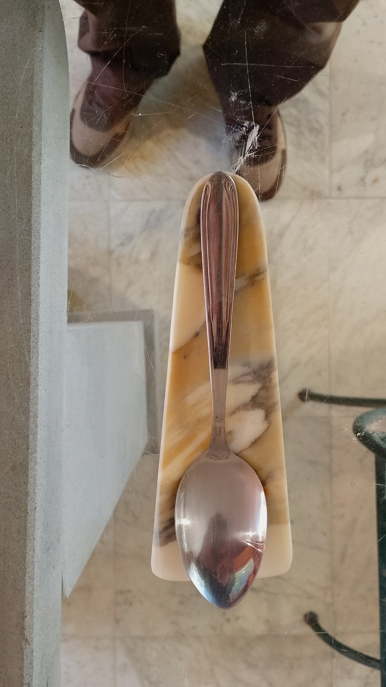
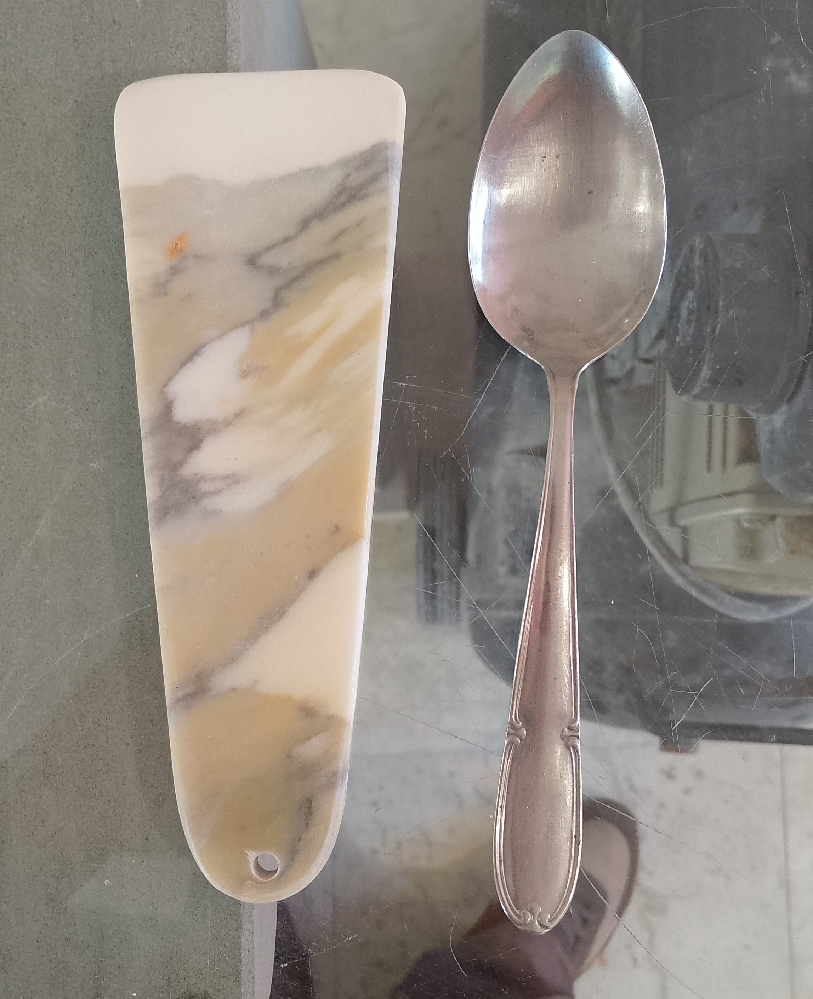
IT: Michelangelo vide nelle cave bianche di Carrara una bellezza tale che rimase affascinato tutta la sua vita.
EN: Michelangelo found in Carrara white quarries a beauty that captivated him forever.
Vidi un angelo dentro un blocco di marmo, prestai la mia opera per liberarlo nel cielo.
I saw an angel inside a block of marble, i let my work to release it into the sky.
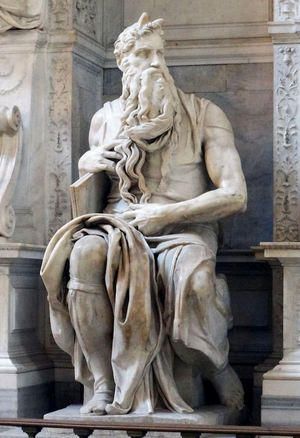
Nel Mose, Michelangelo concentra una forza trattenuta e terribile: la leggenda racconta che martello il ginocchio della statua, sembrava umana, voleva che parlasse da tanto era bella.
In the Moses, Michelangelo condenses a restrained and terrible power: legend says he struck the knee of the statue, he wanted her to speak, she was just that beautiful.
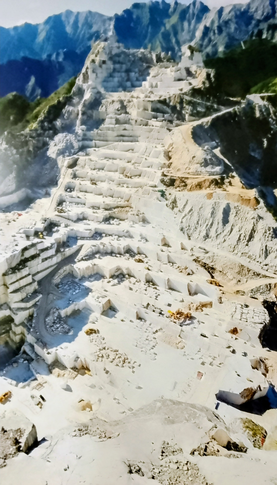
Dalla Cava Gioia di Colonnata nasce il viaggio del marmo: un blocco scelto, imbragato e affidato alla forza dei cavatori.
From the Gioia Quarry in Colonnata begins the marble journey: a chosen block, strapped and entrusted to the strength of the quarrymen.
Quel blocco, sollevato con precisione antica, raggiunge il laboratorio dove viene scolpito per le mie minisculture.
That block, lifted with ancient precision, reaches the workshop where it will take shape in my miniscultures.
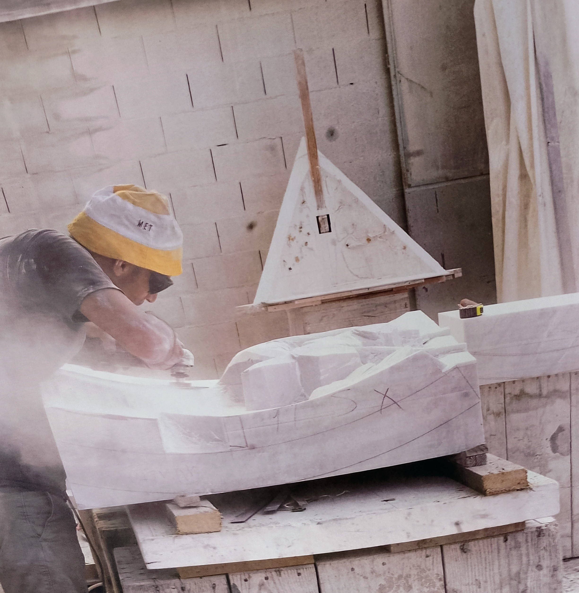
Nel laboratorio, ogni miniscultura nasce da gesti lenti e precisi: il marmo prende forma tra mani che conoscono la sua resistenza e la sua essenza.
In the workshop, each minisculture is born from slow, precise gestures: the marble takes shape between hands that know its resistance and fragility.
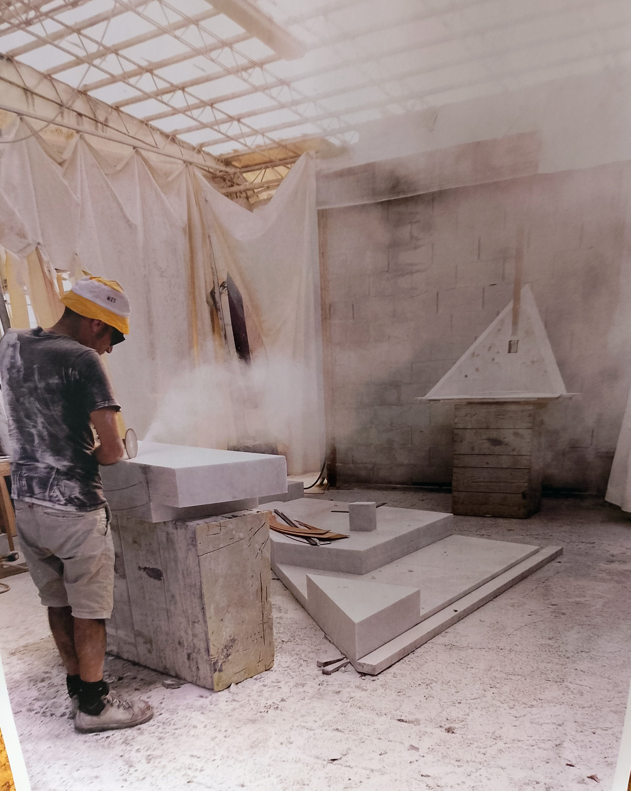
La superficie si apre, il blocco rivela la sua anima: ogni colpo di scalpello apre a una scelta definitiva.
The surface opens, the block reveals its soul: every chisel strike is a definitive choice.
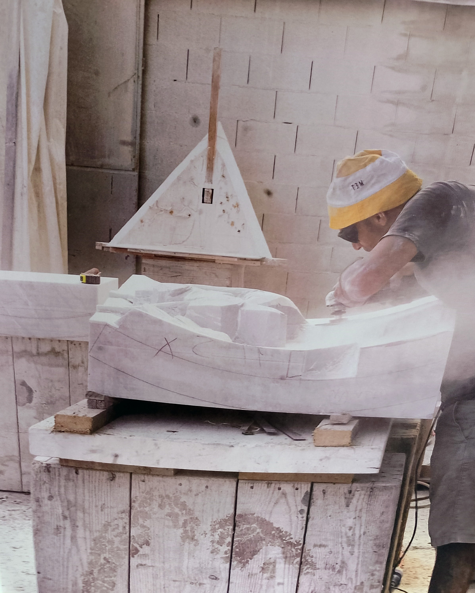
La forma emerge, piccola e intensa: una miniscultura pronta a raccontare il viaggio iniziato in cava.
The form emerges, small and intense: a minisculture ready to tell the journey that began in the quarry.
Le opere sono fotografate senza filtri, senza luci artificiali e senza ritocchi.
Solo uno strumento essenziale, capace di restituire la verità del marmo e la sua unicità materica.
Chi cerca immagini levigate, sfondi neutri o perfezioni digitali non troverà qui quel linguaggio.
Il marmo, in questo spazio, è presentato nella sua essenza più pura.
These works are photographed without filters, artificial lighting or digital retouching.
Only a simple tool, able to reveal the truth of marble and its unique material presence.
Those seeking polished images, neutral backdrops or digitally perfected objects will not find that language here.
In this space, marble is presented in its purest essence.
Rettangoli in marmo Bianco Venatino, scolpiti a mano, pensati come piccoli elementi identitari.
Possono essere incisi con nomi, iniziali o cognomi, diventando segnaposto personali, simboli familiari
o dettagli decorativi per ristoranti e ambienti di accoglienza. La loro forma essenziale valorizza
la purezza del marmo e la sua presenza materica.
Hand‑carved rectangles in Bianco Venatino marble, conceived as small identity elements.
They can be engraved with names, initials or family surnames, becoming personal place markers,
family symbols or decorative accents for restaurants and hospitality spaces. Their essential form
highlights the purity of marble and its material presence.
Misure: 7 cm × 1.5 cm
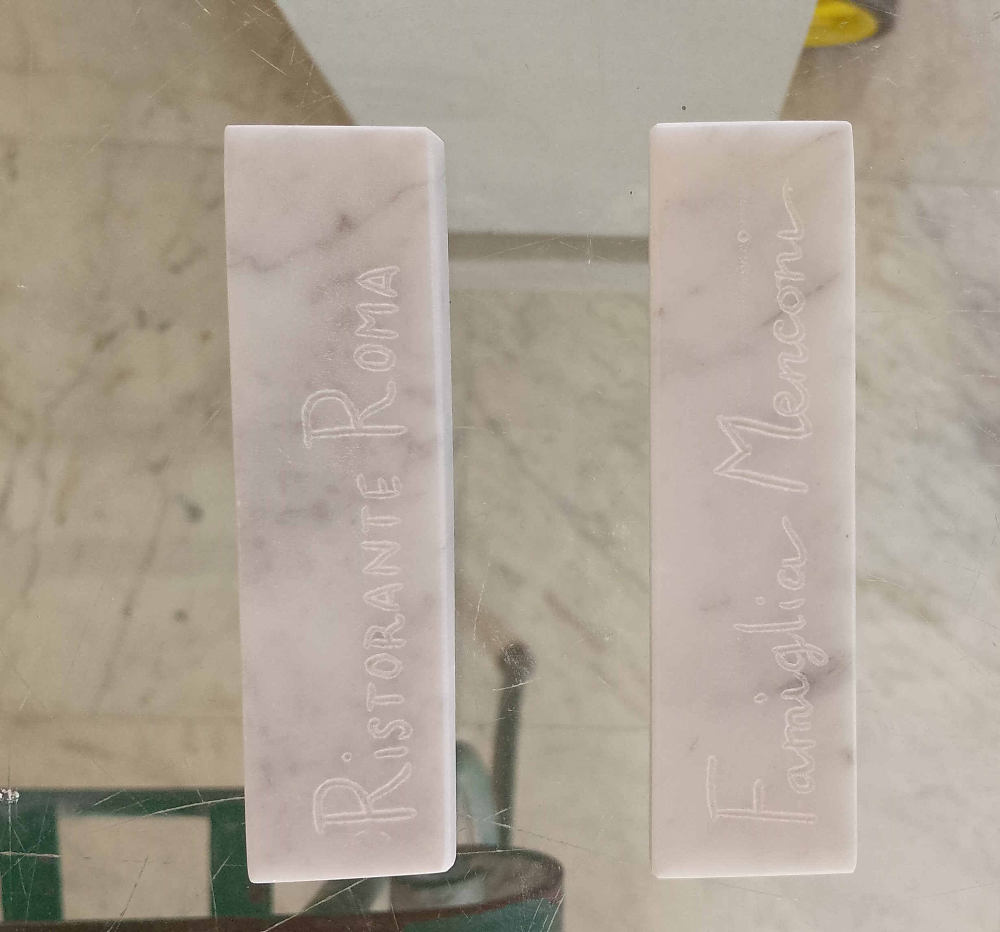
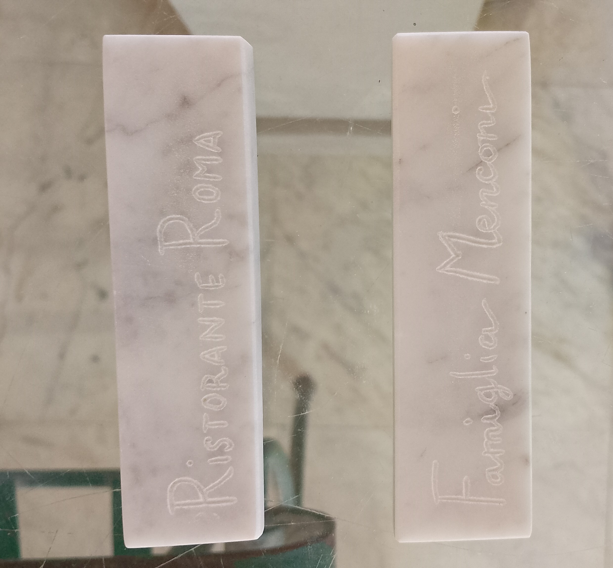
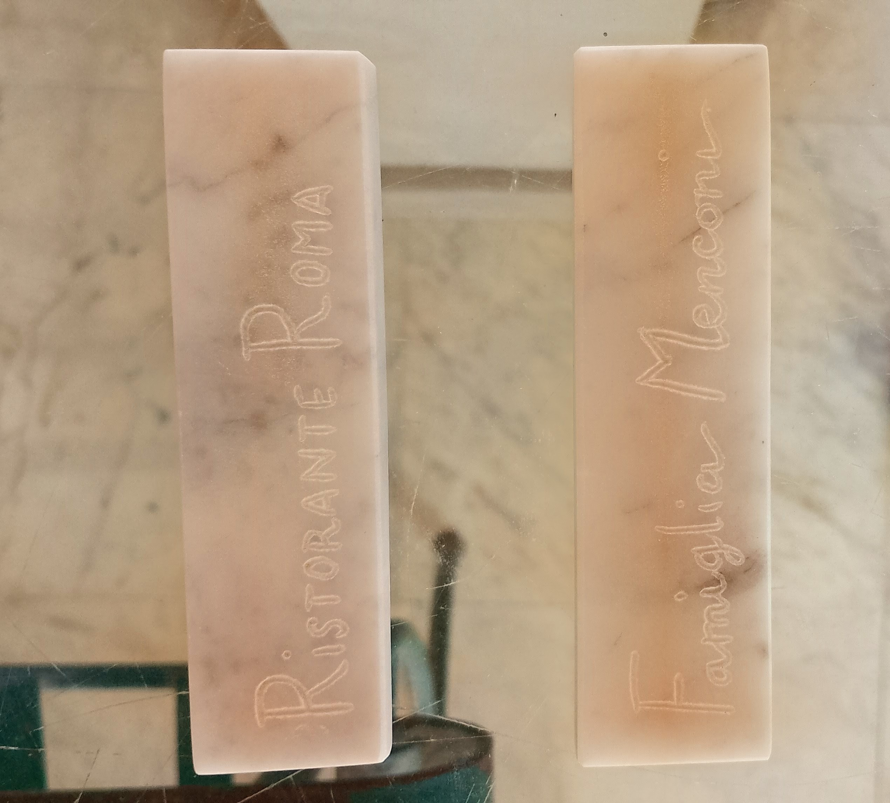
Portaposate in marmo Bianco Venatino di cava Gioia, scolpiti a mano con linee essenziali e proporzioni raffinate.
Con i suoi 19 × 6 cm, è pensato come elemento di eleganza per la tavola: accoglie posate, tovaglioli o piccoli dettagli decorativi,
trasformando un gesto quotidiano in un’esperienza di stile. La presenza materica del marmo supera ciò che le fotografie possono mostrare.
Cutlery rest in Bianco Venatino marble from Cava Gioia, hand‑carved with essential lines and refined proportions.
Measuring 19 × 6 cm, it serves as an elegant table element for cutlery, napkins or decorative accents,
elevating a simple gesture into a moment of style. Its material presence exceeds what any photograph can convey.
Misure: 19 cm × 6 cm


Porta incenso in marmo Bianco Venatino di cava Gioia, scolpito a mano con una linea essenziale che accoglie il bastoncino.
Una volta acceso, il profumo si diffonde lentamente mentre il fumo disegna movimenti leggeri, creando un gesto rituale di calma e atmosfera.
La purezza del marmo amplifica la sensazione di ordine, silenzio e presenza materica.
Incense holder in Bianco Venatino marble from Cava Gioia, hand‑carved with an essential line that supports the incense stick.
Once lit, the fragrance releases gradually while the smoke traces soft movements, creating a ritual gesture of calm and atmosphere.
The purity of the marble enhances the sense of order, silence and material presence.
Misure: 16 cm × 4 cm
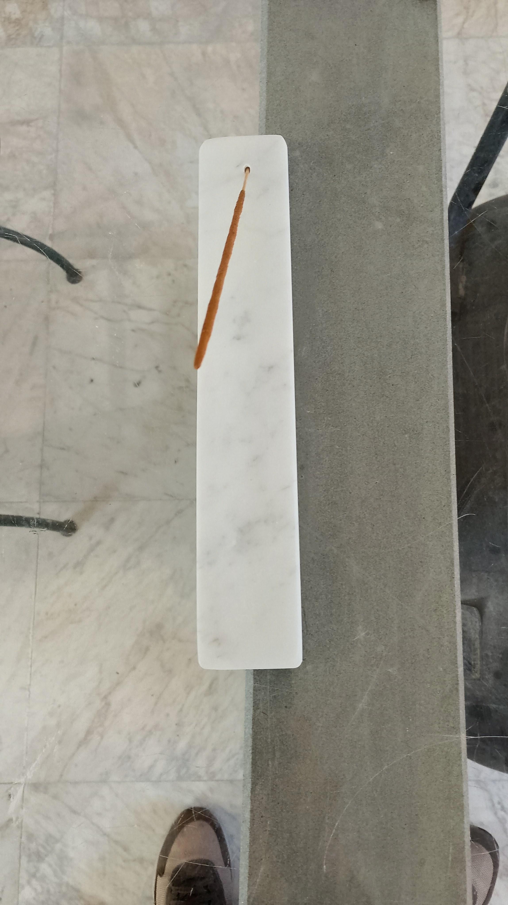
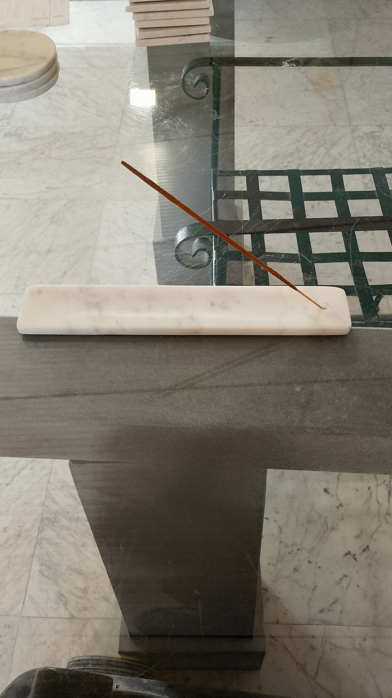
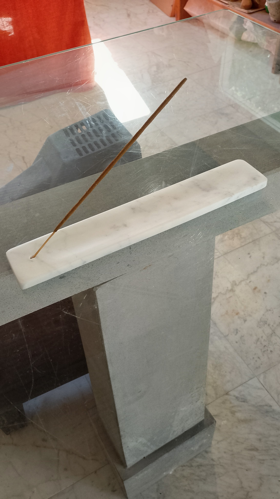